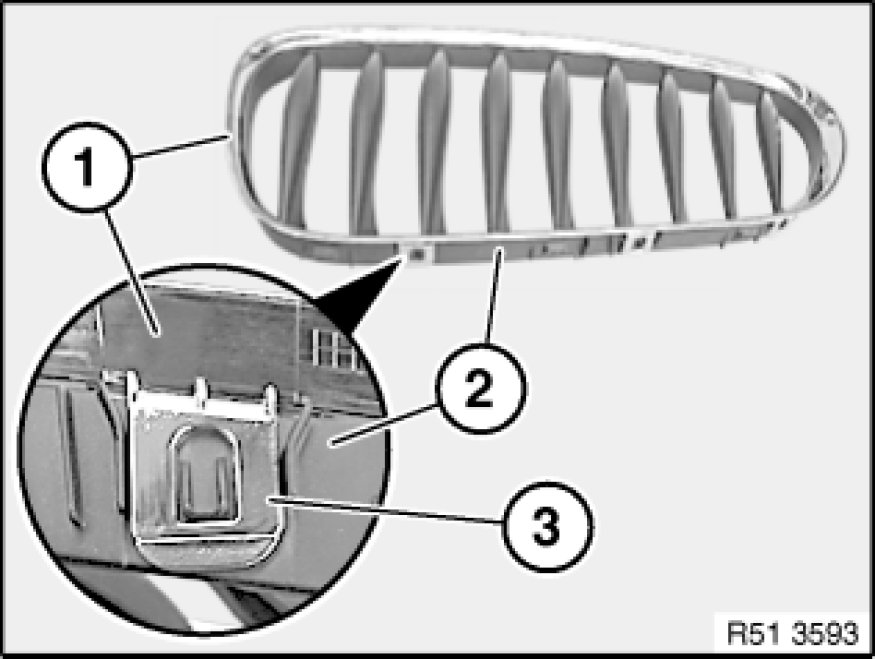

51 13 ... Replacing Front Radiator Grill, Middle Left or Right
51 13 ... - Replacing front radiator grill, middle left or right

Note:
Representation created using the E85 as an example. There may be differences in detail in the case of other vehicle models.

Lever out upper catches (3) and separate inner section (2) from chrome ring (1).
Installation:
Check inner section (1) for damage.
Retaining lugs (3) and (4) along line (2) must not be damaged.
Installation:
Check chrome ring (1) for damage.
Catches (4) and guides (3) along line (2) must not be damaged.
Installation:
Assemble chrome ring (1) and inner section (2).
Make sure catch (3) is correctly assembled.